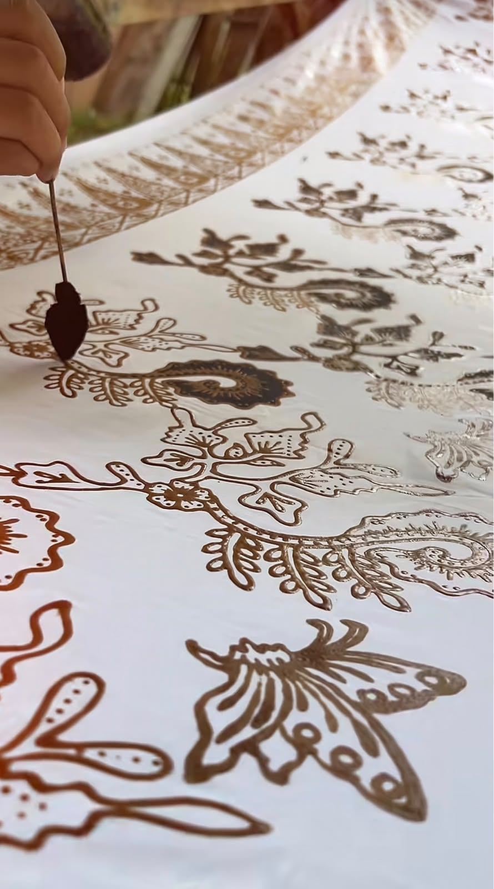
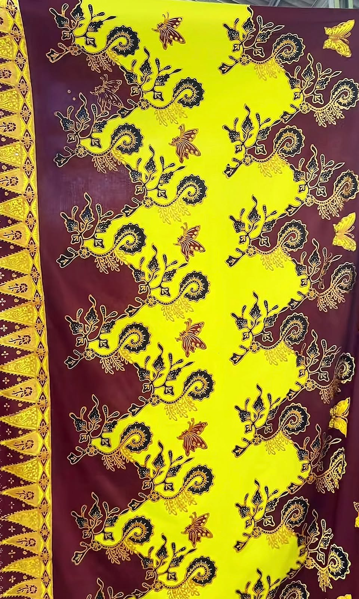
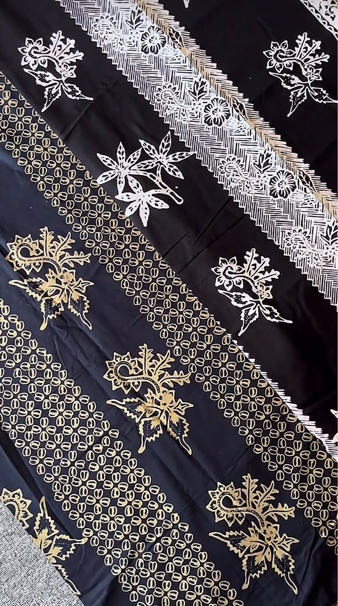
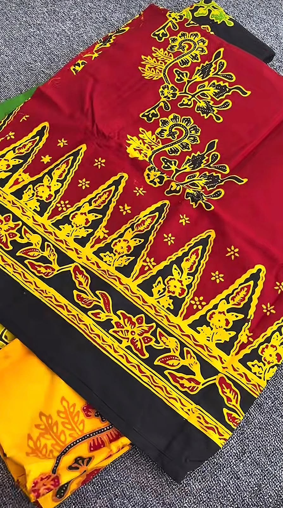

Identitas Budaya
Batik Gajah Oling adalah motif batik paling terkenal dari Suku Osing (suku asli Banyuwangi) yang menjadi simbol kebanggaan dan identitas budaya daerah tersebut. Motif ini telah menjadi ciri khas Banyuwangi yang diakui secara nasional.
Batik ini bukan sekadar kain bermotif indah, melainkan warisan leluhur yang sarat akan nilai moral, rasa syukur, dan keteguhan hidup yang terus dilestarikan oleh para pengrajin lokal.
Arti Nama & Filosofi
Nama "Gajah Oling" memiliki makna yang sangat mendalam bagi masyarakat Banyuwangi:
Gajah
Melambangkan kekuatan, kebesaran, dan kebijaksanaan. Gajah adalah hewan yang dihormati dalam berbagai budaya karena kearifan dan kekuatannya.
Oling (Eling)
Berasal dari kata "eling" dalam bahasa Jawa/Osing yang berarti ingat. Filosofinya adalah pesan agar manusia selalu ingat kepada Tuhan, rendah hati, dan tidak melupakan asal-usulnya.
Pesan Moral
Secara keseluruhan, Batik Gajah Oling mengajarkan agar manusia selalu mengingat Sang Pencipta dalam setiap langkah kehidupan, menjaga kerendahan hati, dan bersyukur atas segala nikmat.
Ciri Khas Motif
Batik Gajah Oling memiliki karakteristik visual yang sangat unik dan mudah dikenali:
- Berbentuk lengkungan menyerupai belalai gajah atau huruf "S" yang mengalir.
- Dipadukan dengan unsur alam seperti bunga, daun, dan sulur-sulur yang melambangkan kesuburan dan keharmonisan.
- Warna yang digunakan biasanya dominan coklat, hitam, dan krem yang memberikan kesan elegan dan klasik.
- Setiap goresan motif dibuat dengan teliti menggunakan teknik canting tulis atau cap.
Penggunaan
Batik Gajah Oling sangat fleksibel dan dapat digunakan dalam berbagai kesempatan:
1. Acara Adat & Pernikahan
Menjadi pakaian wajib dalam berbagai upacara adat Osing dan pernikahan tradisional Banyuwangi.
2. Seragam Resmi
Digunakan sebagai seragam sekolah, instansi pemerintah, dan perusahaan di Banyuwangi sebagai bentuk identitas daerah.
3. Busana Modern
Diadaptasi menjadi berbagai fashion modern seperti kemeja, dress, hijab, dan aksesori tanpa menghilangkan motif aslinya.
4. Festival Budaya
Sering dipamerkan dan digunakan dalam berbagai festival budaya untuk mempromosikan kekayaan Banyuwangi.
Fakta Menarik
Ikon Banyuwangi
Gajah Oling adalah motif batik yang paling identik dengan Banyuwangi, sama seperti Parang untuk Yogyakarta atau Mega Mendung untuk Cirebon.
Teknik Tradisional
Meski sudah ada yang menggunakan teknik cap, pengrajin asli masih mempertahankan teknik canting tulis untuk menjaga kualitas dan nilai seni.
Go International
Batik Gajah Oling mulai dikenal hingga ke mancanegara sebagai salah satu warisan budaya tak benda Indonesia yang unik.
Pewarnaan Alami
Banyak pengrajin yang masih menggunakan pewarna alami dari tumbuhan seperti kulit pohon mahoni, daun jambu, dan kunyit.
Galeri



